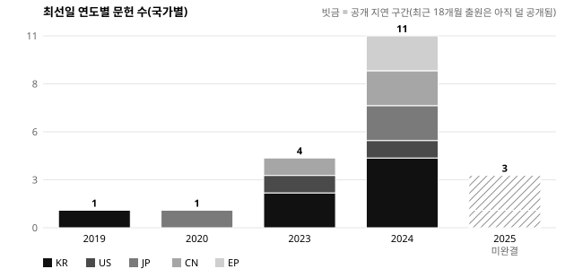
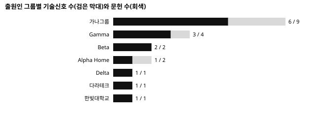

분석 범위: 한국·미국·일본·중국·유럽 공개·등록 문헌 · 자료일 2026-11-01 · 공개특허 모집단 20건, 기술동향 분석대상 16건, 이번 회차 신규 관측 7건. 승인된 분석 기준선(2026-R4 v2)만 사용.
업계는 분쇄실과 건조 열원을 한 공간에 통합하는 방향으로 모이고 있습니다 [B01]. 가장 공격적인 경쟁사는 가나그룹으로, 건조·분쇄와 미생물 발효 두 축을 동시에 권리화하고 3개국에 진출했습니다 [B02][B07]. 냄새 저감은 건조 후단 가열 촉매로 수렴하는 조짐이 있으나 근거가 아직 2건입니다 [B03]. 투입량을 스스로 인식하는 기능이 대학과 중국 업체에서 조기경보로 나타났습니다 [B04]. 다라테크의 순서 변경형 구조는 같은 기능을 다른 방식으로 얻는 회피설계 신호입니다 [B06]. 2025년 출원이 적어 보이는 것은 공개 지연 때문일 수 있어 감소로 읽지 않습니다 [B08]. 즉시 결정할 일은 주력 구조와 같은 축의 두 문헌에 대한 정밀분석 착수입니다 [B01][B02].

근거강도 강 · 독립 그룹 4곳 · 기술신호 5개 · 2023~2025년 지속 · 주력제품 직접 관련 [B01]
| 문헌 | 출원인 | 권리유형 | 핵심 판단 |
|---|---|---|---|
| US 2025/0900011 A1 | 가나전자 주식회사 (GANA ELECTRONICS CO. LTD.) | 발명(공개) | 습도 값으로 건조·분쇄 단계 전환, KR·US·CN 패밀리 |
| US 12,990,031 B2 | ALPHA HOME INC. | 발명(등록) | 분쇄실 둘레 가열 덕트 — 동시 건조·분쇄 |
| CN 129900041 A | 深圳伽马电器有限公司 (SHENZHEN GAMMA ELECTRIC APPLIANCE CO. LTD. · 비공식 번역) | 발명(공개) | 일체형 챔버, 같은 날 실용신안 병행 후보 |
| KR 10-2025-0990051 A | 다라테크 주식회사 (영문명 미확인) | 발명(공개) | 회전수 단계 저감 — 순서 변경형 |
근거강도 강 · 1개 그룹(계열사 포함) · 기술신호 4개 · 발명 연속출원 [B02]
근거강도 중 · 독립 그룹 2곳 · 기술신호 2개 [B03]
근거강도 약 · 2곳 · 작동원리 상이(영상 대 무게) [B04]

| 순위 | 문헌 | 출원인 | 분석목적 | 긴급도 |
|---|---|---|---|---|
| 1 | US 12,990,031 B2 | ALPHA HOME INC. | 주력 구조와 같은 축의 등록특허 — 청구범위 확인 | 높음 |
| 2 | US 2025/0900011 A1 | 가나전자 주식회사 (GANA ELECTRONICS CO. LTD.) | 3개국 패밀리, 등록 전 청구항 변화 추적 | 높음 |
| 3 | CN 129900041 A | 深圳伽马电器有限公司 (SHENZHEN GAMMA ELECTRIC APPLIANCE CO. LTD. · 비공식 번역) | 실용신안 병행 여부 확정 | 중간 |
| 4 | KR 10-2025-0990021 A | 가나전자 주식회사 (GANA ELECTRONICS CO. LTD.) | 분쇄날 2단 구조 후속출원 | 중간 |
| 5 | KR 10-2026-0990101 A | 한빛대학교 산학협력단 (영문명 미확인) | Strategic Exception — 대체 작동원리 | 낮음 |
점수는 당사 청구항이 없어 근접성을 뺀 80점 만점을 100점으로 환산한 값입니다(근접성 미확정). 최종 선정은 별도 승인 후 진행합니다.
가상 예시 20건으로 표본이 작습니다. 관측사실·예측·법률적 한계를 나눠 적었고, 모든 결론은 승인된 기준선 태그와 연결했습니다.